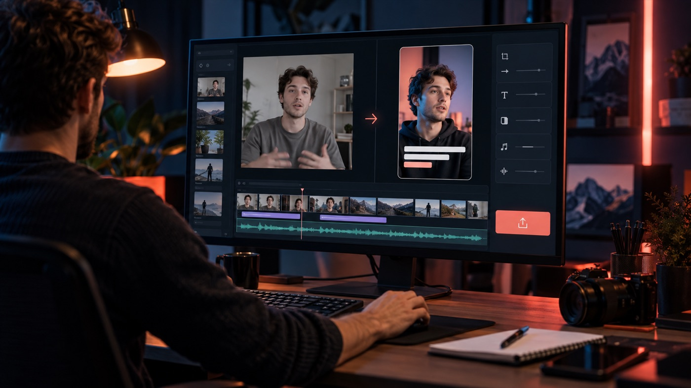

Submagic Review
Submagic is a strong choice for creators and marketing teams that want a fast first edit for short-form video. Its best features combine animated captions, silence removal, b-roll, zooms and vertical formatting. Choose it for speed and repeatability, not for the frame-by-frame control of a full desktop editor.

The product sits between a basic caption generator and a conventional video editor. You upload footage or provide a longer source, let the system make a first set of editing decisions, then correct the transcript, style and visual choices before exporting.
That middle position is why opinions can sound contradictory. A creator who spends hours styling captions and finding b-roll may save substantial time. An editor who expects a deep multi-track timeline may feel boxed in.
Our evaluation is based on current product documentation, plan data, API documentation and a review of public customer feedback. The scoring reflects fit for short-form production, not every possible type of video editing. See our research process for how these pages are assembled.
Submagic review scorecard
Very good for repeatable social editing, with precision tradeoffs.
The first automated pass removes much of the blank-canvas work.
Styling, emphasis and language coverage are core strengths.
Faster than a full timeline, but less granular.
A documented API and webhooks extend it beyond manual editing.
Best when the monthly allowance replaces recurring editing labor.
The overall score assumes you publish short-form video consistently. A person producing two clips per month may get better value from a free editor. A creator, agency or podcast team moving dozens of clips through the same style has a clearer reason to pay.
We weighted editing speed and caption workflow more heavily than advanced timeline control because those are the jobs the product is designed to solve. The score would be lower if judged as a replacement for Premiere Pro, Final Cut Pro or DaVinci Resolve. It would be unfair to pretend a browser-based automatic editor is trying to be the same thing.
Pricing and automation received separate scores because a tool can be easy to use manually while being expensive or awkward to scale. The published API improves the automation case, but plan allowances and failed-job handling still matter in production.
See the editor with your own footage
The free test covers three short videos. Use different source files and measure the corrections each result needs.
Try SubmagicWhat the software actually does
The basic workflow begins with footage. This is not primarily a text-to-video generator that invents a complete presenter and scene from a prompt. It is an editing system for recorded video, long-form sources and short social clips.
For a normal talking-head short, the platform transcribes the audio, applies a caption style, identifies pauses, offers automated cuts and can add visual changes such as zooms, images, GIFs, sound effects, music and contextual b-roll.
For long-form material, Magic Clips is the repurposing path. It is designed to identify sections from podcasts, interviews, webinars or longer recordings and produce vertical clips. That solves a different problem from captioning a short you already selected, so the source length and plan limits deserve separate attention.
The finished result still needs review. Brand names, niche vocabulary and names can require transcript corrections. Automated b-roll may be technically related without being the exact visual you would have chosen. The goal is a useful first edit, not a machine that makes every creative judgment perfectly.
A good production test starts with one source and creates two versions: the automated first pass and a version made with the current process. Compare time spent, number of corrections, final watch time and whether the brand style remained consistent. That side-by-side result is more informative than comparing feature lists.
Where the feature set is strongest
Animated captions and readable social formats
Captions are the clearest reason to consider the platform. The company advertises support across more than 100 languages, multiple animated styles, keyword emphasis and brand customization. That is materially different from dropping plain subtitles at the bottom of a video.
Good caption styling has to survive two tests. It should be readable on a phone without covering the speaker's face, and the emphasis should follow the sentence rather than flash random words. Templates provide a fast starting point, but a reusable brand setup matters more after the novelty wears off.
Automatic trimming and pacing
Silence removal and bad-take trimming attack the dullest part of talking-head editing. The value depends on how you speak. A crisp delivery with obvious pauses is easier to process than a conversational recording full of false starts and intentional silence.
Review every cut around breaths, jokes and emotional pauses. An algorithm can see empty waveform space without understanding that the pause is carrying the point.
B-roll, zooms and visual movement
Automatic b-roll and zooms help keep a vertical clip moving. They are useful when the alternative is a static face for 60 seconds, but they can also make a serious video feel over-edited.
The product is strongest when you establish a repeatable house style and remove effects that do not fit. That turns automation into consistency rather than a slot machine that produces a different visual personality every time.
Long-form repurposing
Magic Clips expands the use case beyond polishing clips you already chose. It accepts longer source material and attempts to find self-contained moments worth turning into shorts.
Selection quality is more important than the number of clips returned. A segment can have a high engagement score and still begin without context or end before the payoff. Review the opening sentence, the promise and the final sentence as a unit.
Publishing and team workflow
Current plans include social publishing and analytics features, with the number of profiles varying by level. This can reduce handoffs for a solo creator or small team, although a dedicated scheduler may still be preferable when approval rules and cross-channel reporting are more complex.
API access for automated production
The published API is one of the more interesting parts of the product for automation-focused buyers. It supports creating projects from a file or URL, applying templates and automated effects, receiving completion updates through webhooks and retrieving the result.
That makes it possible to place the editor inside a larger workflow. A system can watch a folder, create an editing job, wait for completion and move the finished asset to storage or a publishing queue. Human review should remain in the loop until the output is consistently reliable.
API availability and included minutes differ by plan. Confirm the current allowance before designing a high-volume system around the published endpoints.
Automation buyers should also ask where the source file is stored, how long completed files remain available and whether the workflow can safely retry after a timeout. A webhook can report completion, but your system still needs a plan for missing callbacks and duplicate events.
How the current plans compare
Monthly billing currently starts at $19. Annual plans advertise savings of up to 41 percent, with lower effective monthly rates. The main differences are video allowance, maximum duration, export quality, brand features and automation capacity.
| Plan | Monthly price | Videos | Duration | Best fit |
|---|---|---|---|---|
| Starter | $19/member/month | 15 | Up to 2 minutes | Solo short-form creator |
| Pro | $39/member/month | 40 | Up to 5 minutes | Frequent publishing and brand control |
| Business | $69/member/month | Up to 100 | Up to 30 minutes | Teams, higher quality and API use |
Starter includes 1080p export without a watermark and a modest API allowance. Pro increases volume and adds broader automatic editing, publishing and brand features. Business raises the allowance, supports 4K and 60 FPS options, and is the plan to examine for heavier API usage.
Do the math against your output rather than the monthly sticker price. At 15 videos, the $19 level works out to about $1.27 per available video if you use the full allowance. At 40 videos, the $39 level is just under $1 per available video. Unused capacity raises the effective cost.
Now add labor. If a short currently takes 25 minutes and the automated first pass reduces that to 10, a batch of 40 returns roughly 10 hours. If every output still needs 22 minutes, the subscription is buying novelty rather than meaningful capacity.
Agencies should calculate by client and template. One reusable brand setup across 30 similar clips is a different economics problem from six clients who each need unique captions, b-roll rules, approval and export settings.
Magic Clips and other advanced processing can have separate usage rules or add-ons. The final checkout and in-account usage meter should settle the decision.
How to test without confusing the two intents
The free offer is useful, but it should not carry the entire review. A three-video allowance tells you whether the editor understands your footage. It does not prove that a paid plan will handle your monthly volume smoothly.
Use the free projects for accuracy and usability. Use the pricing table for the capacity decision. Our focused Submagic free trial guide provides a three-clip test plan without repeating the full product evaluation here.
What public customers praise and criticize
At the time of research, the company's Trustpilot profile showed a 4.5 out of 5 rating from more than 800 reviews. Positive comments commonly referenced ease of use, captioning, editing speed and helpful support.
The critical reviews should not be ignored. Reported complaints include support delays, technical problems, billing frustration and failed or glitchy exports. Public review platforms contain both genuine experiences and uneven levels of detail, so they are a signal rather than proof of what every account will experience.
The pattern matches the product category. Automation saves time when the run succeeds, and it feels especially painful when a failed job consumes an allowance or blocks a deadline. Test the workflow with non-critical footage before putting client delivery on it.
Customer ratings also move over time. We recorded the review count and score as a dated research snapshot, not a permanent product fact. Read recent detailed comments and look for repeated issues rather than relying on the average alone.
The real pros and cons
Strengths
- Fast route from raw talking-head footage to a formatted short
- Strong emphasis on animated, brandable captions
- Automatic silence removal, zooms and contextual b-roll
- Long-form clipping for podcasts and interviews
- Documented API and webhook workflow
- Entry plan priced for individual creators
Limitations
- Less granular than a full desktop timeline
- Automatic effects can become visually busy
- Transcripts and selected clips still require review
- Video and duration limits increase by plan
- Advanced processing may use add-ons or separate allowances
- A failed automated job can be costly near a deadline
Which alternatives deserve a look
CapCut is the obvious comparison for creators who want broader manual control and already know a timeline editor. It can be less expensive, but the workflow requires more hands-on decisions.
OpusClip is a closer comparison when long-form clipping is the primary job. Descript is stronger when transcript-based editing, podcasts and longer projects live in the same production environment. Captions focuses heavily on mobile-first creator workflows and AI-driven presentation tools.
The right comparison begins with the bottleneck. Choose a caption-first editor when captions and styling eat the time. Choose a clip-finding product when selecting moments is the slow part. Choose a full editor when precision and layered composition matter more than speed.
Run one identical 60-second source through the top two candidates. Use the same font, colors and target platform, then compare corrections. The test costs a little time up front and can prevent a year of paying for the wrong workflow.
Operational questions for teams
A team purchase needs more than a feature match. Decide who owns the workspace, who controls billing, how client brand assets are separated and which people can publish. A shared login may look convenient until a contractor leaves or a client requests access to its files.
Ask how source footage and completed renders are retained, whether deleted projects can be recovered and what the offboarding process looks like. Review the vendor's current privacy and security documentation if customer recordings, private interviews or unreleased products will be uploaded.
Build a fallback path for deadline-sensitive work. Keep original footage outside the editor, document the template settings and know how to finish a clip manually if the service is unavailable. Automation should reduce operational risk, not make one browser tab the only place where production can continue.
Who gets the clearest return
Daily and near-daily short-form publishers have the strongest case. Agencies can also benefit when several clients use repeatable templates and the team needs a consistent first pass.
Podcasters and webinar marketers should pay close attention to the long-form clipping limits. The product may shorten selection and formatting work, but one source can generate many possible clips and consume capacity differently from editing preselected shorts.
Occasional users should test free tools first. If a monthly subscription does not replace a recurring block of work, convenience alone may not justify another bill.
Common buyer questions
Is it worth paying for?
Yes for frequent short-form publishers who repeatedly handle captions, pacing, b-roll and formatting. The value is weaker when you publish rarely or need a precision timeline.
Can it find clips inside a podcast?
Yes. Magic Clips is designed to identify moments in longer recordings and produce vertical shorts. Review each clip for context, opening strength and a complete ending.
Does it replace a professional editor?
It can replace repetitive first-pass tasks. It does not replace creative judgment, brand decisions or detailed timeline work in every project.
Can it run inside an automated workflow?
Yes. The published API supports programmatic project creation, editing controls and completion webhooks. Confirm the plan allowance before building for scale.
Is there a way to test before paying?
Yes. Official help documentation says three short videos can be uploaded and edited. Watermark-free downloads require a subscription.
Final verdict
Rating: 4.2 out of 5. The product earns its place when speed, animated captions and a repeatable social format matter more than detailed manual control. Start with the free allowance, score the corrections required, and buy based on your real monthly output rather than the number of features on the page.
Test the first edit against your current process
Use your own difficult footage and track the minutes saved before selecting a paid plan.
Visit SubmagicPrimary sources: pricing, API documentation, creator workflow, trial documentation, and the public Trustpilot profile. Checked September 23, 2026.
Disclosure: This page may contain a sponsored link. Shoals Marketing may earn a commission if you purchase, at no additional cost to you. Our 4.2 score is an editorial rating, not the vendor's customer-review average.